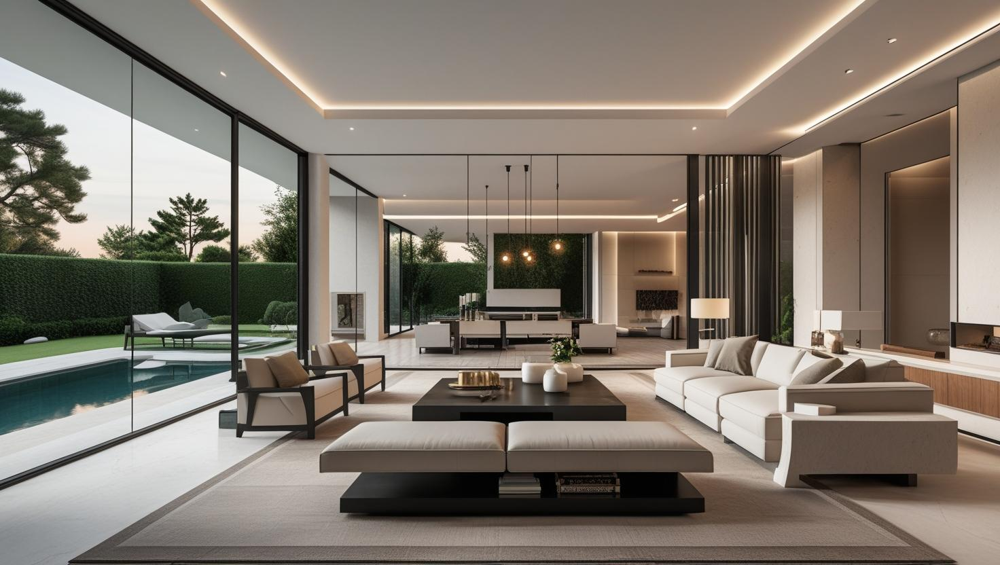
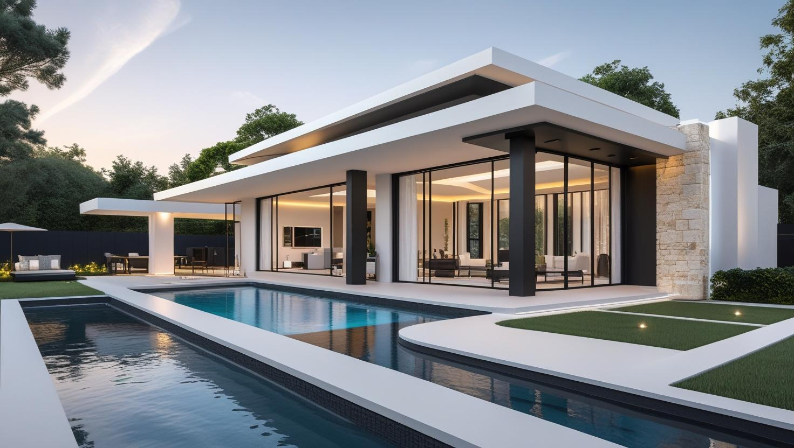

Acarkent'in Profesyonel Boya Ustası
Acarkent'teki villanızın geniş salonları, bahçe duvarları ve ahşap detayları için iç ve dış cephe boyasını 20 yıllık tecrübemizle tek planda ele alıyoruz. Keşif ücretsizdir ve teklifi yazılı olarak paylaşıyoruz.
Acarkent'te Boya Badana: Site İçi Villa Stoğu
Acarkent boyacı talebi Beykoz'a bağlı bu yerleşimin villa ağırlıklı yapısından geliyor. Yapı stoğu site içinde, geniş yüzeyli ve büyük ölçüde bakımlı nitelikte.
Villa işlerinde kapsam çoğu zaman iç cepheyi aşıyor: dış cephe, bahçe duvarı ve ahşap doğrama da gündeme geliyor. Geniş yüzey ve yüksek tavan, boyanacak alanı zemin metrekaresinin üzerine çıkarıyor ve platform çalışması gerektiriyor.
Ormanlık dokuya yakınlık nem yükünü artırıyor; gölge alan cephelerde yeşillenme eğilimi görülebiliyor. Site içinde çalışma saatleri ve giriş kuralları işin planına giriyor.
Acarkent Boya Hizmetlerimiz

İç Mekan Boyama
Acarkent'teki bir villada iç cephe boyası çoğu zaman birden fazla katı, merdiven boşluğunu ve yüksek tavanlı salonları kapsar. Katlar arasındaki renk geçişi ve tavan bitiş çizgisi işe başlamadan belirlenir; eşyalı evlerde çalışma kat kat ilerler.
- Salon ve merdiven boşluğu boyası
- Yüksek tavanlarda platformla çalışma
- Katlar arası renk uyumu
- Kapı ve kasa boyama

Dış Cephe Boyama
Bahçeli villalarda dış cephe boyası; saçak altı, bahçe duvarı ve peyzajın korunmasıyla birlikte planlanır. Ağaçların gölgelediği cephelerde yeşillenme temizliği, güneş alan cephelerde ise renk solması ve tozuma kontrolü öne çıkar.
- Peyzaj ve havuz çevresi koruması
- Yeşillenen cephe temizliği
- Solmuş cephede renk yenileme
- Ahşap doğrama ve pergola bakımı

Dekoratif Boyama
Geniş yaşam alanlarında tek bir vurgu duvarı ya da doku uygulaması, mekânın bütününe karakter katabilir. Seçim, villanın zemin, ahşap ve taş gibi sabit malzemeleriyle birlikte değerlendirilir.
- Galeri ve salon vurgu duvarları
- Doku ve efekt boyaları
- Kartonpiyer ve tavan göbeği boyası
- Zemin ve ahşapla renk uyumu
Acarkent Villa İşlerinde Çalışma Şeklimiz
20 Yıllık Tecrübe
İstanbul genelinde edindiğimiz 20 yıllık boya tecrübesiyle geniş yüzeyli villa işlerini alan alan planlıyoruz.
Önce Yüzey Kontrolü
Nem izi, kılcal çatlak ve eski boyanın tutunması kontrol edilmeden renk ve boya sınıfı konuşulmaz.
Tabloya Dayalı Ön Bilgi
Keşiften önce sayfadaki metrekare aralıklarıyla ön bilgi verilir; kesin tutar yüzey görüldükten sonra yazılı olarak paylaşılır.
10+ Usta ile Çalışma
Ekip büyüklüğü işin kapsamına göre belirlenir; iç ve dış cephe aynı dönemde yapılacaksa çalışma günleri buna göre bölünür.
Telefon ve WhatsApp
Keşif randevusu, fotoğraf paylaşımı ve iş süresince çıkan sorular için telefonla ya da WhatsApp üzerinden ulaşabilirsiniz.
Temiz Teslim
İş bitiminde çalışılan alanlar ve malzemenin taşındığı yollar temizlenir; teslimden önce rötuş gereken noktalar kontrol edilir.
Acarkent'te Bahçeli Villanın Dış Cephesi: Peyzaj, Havuz ve Komşu Bahçe Koruması
Acarkent'te bahçeli bir villanın dış cephe boyası, cepheden önce çevrenin korunmasıyla başlar. Çim ve bitkiler, havuz kenarı, dış aydınlatma ve bahçe mobilyası iş planına baştan dahil edilir.
- Peyzaj: Cephe dibindeki bitkiler örtülür; iskele ya da platformun kurulacağı zemin, çimi ve sulama hattını zedelemeyecek şekilde seçilir.
- Havuz ve deck: Havuzlu villalarda raspa tozu ve boya damlasının suya ve ahşap zemine ulaşmaması için bu alan ayrıca kapatılır.
- Doğrama ve camlar: Pencere, kapı ve cam korkuluklar bantlanır; koruma, boya kuruyana kadar yerinde kalır.
- Komşu bahçeler: Raspa tozu ve boya artığının komşu parsellere taşınmaması için rüzgârlı günlerde dış cephe uygulaması ertelenebilir.
Eşya Koruma
Mobilya, parke ve mermer yüzeyler iş başlamadan örtülür; koruma iş bitene kadar kaldırılmaz.
Ücretsiz Keşif
Villanın boyanacak bütün yüzeyleri keşifte yerinde görülür; yazılı teklif keşfin ardından hazırlanır.
Kuruma Süresine Uyum
Macun, astar ve boya katları arasında üreticinin önerdiği kuruma süresi beklenir; işi hızlandırmak için bu aralıklar kısaltılmaz.
Acarkent Villalarında Galeri Boşluklu Salonlar ve Katlar Arası Duvarlar
Çok katlı bir villada iç cephenin en zor bölümü genellikle merdiven boşluğu ve galeri duvarlarıdır. Bu alanlar hem erişim hem de ışık açısından diğer odalardan ayrı planlanır.
- Çalışma sırası: Önce tavan ve üst kat duvarları, ardından alt kat boyanır; böylece damlayan boya bitmiş yüzeye gelmez.
- Basamak ve korkuluk: Ahşap ya da mermer basamaklar kaymayan örtüyle kapatılır, korkuluklar bantlanır.
- Renk geçişi: Katlar farklı renkte olacaksa geçiş çizgisinin köşe, pervaz ya da kartonpiyer hizasında bitmesi daha düzgün görünür.
- Yan ışık: Galeri pencerelerinden gelen yan ışık küçük pürüzleri belirginleştirdiği için bu duvarlarda macun ve zımpara aşaması daha özenli yapılır.
Pürüzlü yüzeylerin düzeltilmesinde hangi malzemenin seçileceğini alçı ile macun arasındaki farkları anlatan yazımızda bulabilirsiniz.
Acarkent Villa Boyası Teklifinde Ayrı Yazılması Gereken Kalemler
Acarkent'te boyacı ustası seçerken tek bir toplam rakam yerine alan alan yazılmış teklifleri karşılaştırmak gerekir. Kalemlerin ayrı görünmesi hem bütçeye göre öncelik belirlemeyi hem de iş sonunda kontrolü kolaylaştırır. Hizmet türüne göre metrekare aralıklarını hemen aşağıdaki fiyat tablosunda görebilirsiniz.
- İç duvar ve tavanlar ile merdiven boşluğu ve galeri duvarları
- Dış cephe, saçak altı ve bahçe duvarı
- Ahşap doğrama, pergola ve kapılar
- Raspa, alçı ve sıva tamiri ile yeşillenme temizliği gibi hazırlık işleri
- Koruma, malzeme taşıma ve iş sonu temizliği
Kapsamın, boya türünün ve teslim koşullarının yazıya nasıl geçirileceğini boyacıyla sözleşme yaparken dikkat edilecekler yazımızda anlattık.
Acarkent Boya Fiyatları
| Hizmet Türü | Metrekare Fiyatı | Ortalama Süre (100m²) | Garanti |
|---|---|---|---|
| İç Cephe Boyama | 100-200 TL | 2-3 Gün | Uygulama kapsamına göre |
| Dış Cephe Boyama | 180-280 TL | 3-5 Gün | Uygulama kapsamına göre |
| Dekoratif Boyama | 250-500 TL | 4-7 Gün | Uygulama kapsamına göre |
| Ofis Boyama | 150-250 TL | 2-4 Gün | Uygulama kapsamına göre |
| Badana İşleri | 80-150 TL | 1-2 Gün | Uygulama kapsamına göre |
Metrekare fiyatları yaklaşık ön değerlendirme aralığıdır. Uygulanacak ölçüm yöntemi, boyanacak alanın kapsamı, yüzey durumu, tamirat ihtiyacı, kat sayısı ve malzeme seçimi keşif sırasında netleştirilir.
Dış cephe boya fiyatları uygulama alanı için yaklaşık 180–280 TL/m² aralığındadır. Kesin hesaplama yöntemi ve teklif; yüzey durumu, bina yüksekliği, erişim veya iskele ihtiyacı, tamirat kapsamı, boya sistemi ve uygulanacak kat sayısına göre keşif sırasında netleştirilir.
Uygulama kapsamına göre işçilik garantisi sağlanır. Garanti kapsamı ve istisnaları teklif veya iş sözleşmesinde belirtilir.
Bu rakamlar İstanbul Boyacılık'ın 2026 gösterge fiyat aralığıdır. Bir piyasa ortalaması değildir. Kesin fiyat; yüzey durumu, hazırlık ve tamirat miktarı, uygulanacak kat sayısı, seçilen malzeme sınıfı, ulaşım ve kat koşulları ile evin eşyalı mı boş mu olduğu keşifte görüldükten sonra belirlenir.
Acarkent'te kapsamı büyüten kalemler geniş yüzey ve yüksek tavan, dış cephenin devreye girmesi, gölge cephelerde çıkan temizlik işi ve site giriş/çalışma kuralları.
Acarkent'e Yakın Site ve Semtler
Acarkent'teki villaların yanı sıra Beykoz Konakları, Göksu Evleri ve Kavacık gibi yakın site ve semtlerdeki konutlar için de Acarkent boyacı ustası ekibimizle keşif randevusu oluşturabilirsiniz.
Hizmet Verdiğimiz Yakın Bölgeler
- Acarkent
- Beykoz Konakları
- Kavacık
- Göksu Evleri
- Anadoluhisarı
- Çubuklu
- Riva
- Paşabahçe
- Polonezköy
- Çekmeköy (Villalar Bölgesi)
- Kanlıca
- Çavuşbaşı
Faydalı Bağlantılar
Acarkent bölgesinde premium iç cephe veya dekoratif boya planlıyorsanız fiyat, metrekare hesabı ve marka seçimi rehberlerini birlikte incelemek daha sağlıklı karar verir.
Sıkça Sorulan Sorular
Acarkent'te villa ya da site konutu boyatacaklar için yüzey, koruma ve takvimle ilgili soruları aşağıda yanıtladık.
Büyük parçalar duvardan uzaklaştırılıp yerinde örtülür. Duvara sabitlenmiş ayna, raf ve tablolar sizinle birlikte önceden belirlenerek sökülür ve ayrı bir alanda korunur; sökülmesi mümkün olmayan parçaların çevresi bantlanarak boyanır.
Toz çıkaran hazırlık yapılırken çalışılan odanın kapısı ve kapı aralıkları kapatılır, havalandırma menfezleri örtülür. Zımpara tozu gün sonunda toplanır; böylece evin kullanılan bölümleri tozdan korunur.
Yazılı teklifte her alan için kullanılacak boya türü ve mat, ipek mat ya da saten gibi bitiş belirtilir; renk seçildiğinde kodu da iş notuna eklenir. Böylece ileride rötuş gerektiğinde aynı ton yeniden hazırlanabilir.
Pek çok sitede dış cephe rengi yönetim planı ya da site kurallarıyla belirlenir; farklı bir renge geçmeden önce site yönetiminden onay almanız gerekebilir. Mevcut rengin aynısıyla yenilemede ton, renk kartelası üzerinden cepheye en yakın seçenekle belirlenir.
Havuz suyu sıçrayan duvarlar, normal dış cepheye göre daha fazla nem ve klor etkisine açıktır; bu yüzeylerde suya dayanıklı bir dış cephe sistemi seçilir. Havuzun iç yüzeyi ise duvar boyasından farklı, kendine özgü kaplamalar gerektirir.
Boyanabilir; ancak önce lekeye neden olan su kaçağının giderilmiş ve tavanın tamamen kurumuş olması gerekir. Yalnız lekeli bölge boyanırsa ton farkı görünebileceği için genellikle o tavanın tamamı boyanır.
Renk; zemin, ahşap ve taş gibi değişmeyecek malzemelerin tonuna göre seçildiğinde mekânla daha uyumlu olur. Geniş bir duvarda karar vermeden önce seçilen tonu küçük bir alanda denemek, rengin farklı saatlerde nasıl göründüğünü görmeyi kolaylaştırır.
Site girişinde izin süreci nasıl işliyor?
Site yönetimlerinin çoğu ekip ve araç için önceden bildirim istiyor. Randevu öncesinde bunu sizden öğrenip gerekli bilgileri iletiyoruz; böylece ekip giriş gününde bekleme yaşamıyor.
Villada iç ve dış cepheyi aynı anda yaptırmak mümkün mü?
Mümkün ve planlama açısından avantajlı. Ancak dış cephe hava koşullarına bağlı olduğu için iki işin takvimi her zaman üst üste gelmeyebiliyor; keşifte buna göre planlıyoruz.
Yüksek tavanlı salonda nasıl çalışılıyor?
Platform kullanılıyor ve kurulum ile taşıma süresi işin planına ekleniyor. Bu, aynı metrekaredeki normal tavan yüksekliğine göre süreyi uzatıyor; keşifte ölçüp teklife yansıtıyoruz.
Acarkent Boyacılık Müşteri Yorumları
"Acarkent'teki villamızın komple iç cephe boyasını İstanbul Boyacılık'a emanet ettik. Ekip, yüksek tavanlar ve zorlu detaylar konusunda inanılmaz bir profesyonellik gösterdi. İşlerini belirtilen sürede ve tertemiz bir şekilde teslim ettiler. Sonuç beklentimizin çok ötesinde oldu."
Zeynep Aksoy
Acarkent / İstanbul
"Acarkent boyacı ustası arayışımız komşumuzun tavsiyesiyle son buldu. Eşyalarımızın paketlenmesi ve yerlerin korunmasındaki titizlikleri bizi çok etkiledi. Güler yüzlü ve saygılı bir ekip. Gönül rahatlığıyla tavsiye ederim."
Murat Demir
Beykoz Konakları / İstanbul
"Salonumuz için dekoratif boya uygulaması yaptırmak istiyorduk ve doğru ustayı bulmakta zorlandık. İstanbul Boyacılık, sundukları renk ve doku seçenekleri ile bize çok yardımcı oldu. Ustaların el işçiliği sayesinde duvarlarımız adeta bir sanat eserine dönüştü. Mükemmel hizmet!"
Elif Kaya
Acarkent / İstanbul
İletişim
İşletme merkezi: Orta, Demirkapı Cd. No:1, 34030 Bayrampaşa/İstanbul
İşletme merkezini Google Haritalar’da görüntüleyin
İletişim Bilgileri
Telefon: 0507 832 29 12
E-posta: boyaustamistanbul@gmail.com
10+ Uzman Ustamızla Acarkent ve tüm İstanbul'a hizmet veriyoruz
Çalışma Saatleri: 7/24 (Pzt-Paz 00:00-23:59)